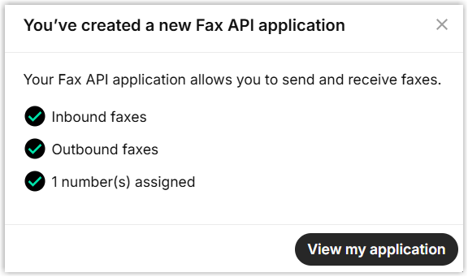

Integrate Yeastar P-Series Software Edition with Telnyx Fax
By integrating Yeastar P-Series Software Edition with Telnyx Fax, employees within your organization can send and receive faxes instantly and securely over the Internet - directly from their own Linkus Web Client or Desktop Client.
Introduction
Yeastar P-Series Software Edition supports the integration with Telnyx to enable internet-based faxing, allowing PBX extension users to send and receive faxes through Telnyx's reliable communications network.
The integration leverages Yeastar PBX webhooks and Telnyx Fax API V2. Telnyx uses webhooks to notify the PBX of inbound faxes, while Yeastar PBX uses Telnyx API V2 endpoints to send faxes and retrieve fax files.
You can easily set up the integration by following the instructions below:
- Obtain Webhook URL from Yeastar PBX.
- Create the necessary resources and obtain the required credentials from
Telnyx.
- An API Key to authenticate your account and access Telnyx API endpoints.
- An Outbound Voice Profile to initiate outbound fax traffic.
- A Fax-enabled Phone Number for sending and receiving faxes.
- A Fax Application to manage inbound and outbound fax traffic.
- Fill in the obtained credentials in Yeastar PBX, then configure fax-related settings.
Requirements
To integrate online faxing capability to Yeastar PBX, ensure Yeastar PBX meets the following requirements.
- Firmware: Version 83.20.0.X or later
- Plan: Enterprise Plan or Ultimate Plan
- Network: Remotely accessible via a domain name or public IP.
Step 1. Obtain Webhook URL from Yeastar PBX
Obtain a Webhook URL from Yeastar PBX first, which is required when you set up a fax application on Telnyx.
- Go to the fax integration page.
- Log in to PBX web portal, go to .
- Under Fax Integration tab, click Add.
- Obtain the Webhook URL for Telnyx.
- In the Service Provider drop-down list, select Telnyx.
- In the Webhook URL field, click to copy the URL and save it for later use.
Step 2. Create resources and obtain credentials from Telnyx
Create the necessary resources and obtain the required credentials from Telnyx, so as to authenticate and authorize interactions between Yeastar PBX and Telnyx.
You need to complete the following settings within Telnyx portal.
- 1. Create an API key
-
- Access the creation page of API key.
- Log in to Telnyx portal.
- At the top-right corner, click your account, then select API keys.
- Create an API key.
- At the top-right corner, click Create API Key.
- In the pop-up window, set tag and expiration date for
the API key as needed, then click
Create.
A new API key is generated and displayed.
- Copy the API key and save it for later use, then close the window.
- Access the creation page of API key.
- 2. Create outbound voice profile
-
- Access the creation page of outbound voice profile.
- At the top-left corner, click Back to return to the home menu.
- On the left navigation bar, go to .
- At the top-right corner, click Create Profile.
- Customize the profile as needed.
- Access the creation page of outbound voice profile.
- 3. Buy a phone number
-
- On the left navigation bar, go to .
- Search and buy a number with fax capability.
- Under the Buy Number tab, set
Features to
Fax and configure additional
filters as needed, then click Search
Numbers to display available
numbers.

- Select the desired number and complete payment.
You will be redirected to the Manage Numbers page, where the purchased number is displayed.
- Under the Buy Number tab, set
Features to
Fax and configure additional
filters as needed, then click Search
Numbers to display available
numbers.
- 4. Create a fax application
-
- Access the fax creation page.
- On the left navigation bar, go to .
- At the top-right corner, click Create Fax App.
- For Details, configure the following
settings, then click Create.
Setting Description Application name Enter a name to help you identify the application. Webhook URL Paste the Webhook URL obtained from Yeastar PBX. Timezone Specify the time zone used in the fax header timestamps.
- For Inbound, retain the default settings or configure it as needed, then click Next.
- For Outbound, select the OVP from the drop-down list of Outbound Voice Profile to enable outbound fax traffic, the click Next.
- For Numbers, click to assign the number to the application.
- At the bottom-left corner, click
Complete.
A window pops up, indicating that the fax application is created.

- Obtain the application ID.
- Click View my application.
- Under the Details tab, copy the application ID and save it for later use.
- Access the fax creation page.
Step 3. Fill in credentials and configure fax settings on Yeastar PBX
On Yeastar PBX, fill in the credentials obtained from Telnyx, then configure the fax-related settings to complete the fax integration.
- Go to the fax integration page.
- Log in to PBX web portal, go to .
- Under Fax Integration tab, click Add.
- In the Authorization section, complete the
authorization settings.
Setting Description Name Enter a name to help you identify the integration. Service Provider Select Telnyx. API Key Paste the API key obtained from Telnyx. Application ID Paste the application ID obtained from Telnyx. - Optional: To forward inbound faxes as email attachments to designated
addresses, perform the following operations.
- Click Add.Note: You can add up to 5 email entries.
- In the Email Type drop-down list, select the
type of email address and complete the corresponding settings.
- Extension's Email: Send the inbound
faxes as email attachments to extension users'
mailboxes.If you choose this option, select the desired extensions from the Extension/Email drop-down list.Note: Ensure the selected extensions have valid email addresses configured. Otherwise, users will not receive the emails.
- Specified Email: Send the inbound
faxes as email attachments to a specified email
address.
If you choose this option, enter a custom email address in the Extension/Email field.
- Extension's Email: Send the inbound
faxes as email attachments to extension users'
mailboxes.
- Click Add.
- Set fax number(s) and specify which extension users are authorized to send
and receive faxes.
- In the Fax Number section, click Add.
- In the pop-up window, configure the following settings, then
click Save.
Setting Description Fax Number Enter the fax number in E.164 format. Example: +12498037994Important: Remove hyphens-from the fax number, otherwise the fax delivery will fail.Fax Reception Destination Select extensions or extension groups that can receive inbound faxes. The designated users can view inbound faxes from Linkus Desktop or Web Client (Path: ).
Extensions Allowed to Send Fax Select extensions/extension groups that can send faxes. The designated users can send faxes from Linkus Desktop or Web Client (Path: ).
- To add more fax numbers, repeat steps a-b.
- Click Save.
Result
The Status displays , indicating the integration with Telnyx has been set up successfully.
What to do next
- (Optional) Customize cover pages, which will be accessible to extension
users when they send faxes.
For more information, see Add a Fax Cover Page.
- Instruct extension users on how to send faxes from their Linkus Desktop or
Web Client.
For more information, see xxx.